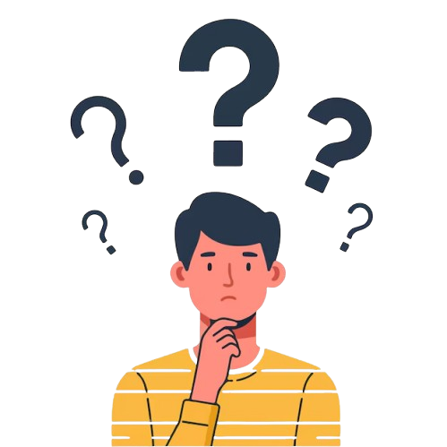

Sustainable fashion adalah inovasi dalam industri fashion yang berfokus pada keberlanjutan lingkungan, sosial, dan ekonomi. Konsep ini bertujuan untuk mengurangi dampak negatif industri fashion terhadap bumi dan masyarakat


Industri tekstil menyumbang 10% emisi karbon global dan 20% limbah air dunia.
Setiap tahun, jutaan ton pakaian berakhir di tempat pembuangan sampah.
Banyak pekerja fashion yang bekerja dengan upah rendah dan kondisi tidak manusiawi.
Produksi pakaian membutuhkan banyak air, energi, dan bahan baku yang tidak terbarukan.
Pakai baju bekas bisa
kurangi emisi karbon

hingga 30%.
Keren, kan?
kalian pasti penasaran bagaimana sustainable fashion bisa jadi solusi?
KOK BISA?
Berikut prinsip-prinsip yang digunakan sustainable fashion
Produk dibuat secara manual, mengurangi penggunaan energi dan meningkatkan kualitas serta daya tahan produk.

Fokus pada kualitas dan desain timeless, mengurangi limbah dan mendorong konsumsi yang bertanggung jawab.
Memilih bahan ramah lingkungan yang diproduksi secara berkelanjutan, mengurangi dampak negatif terhadap lingkungan
Menggunakan bahan daur ulang untuk mengurangi limbah dan kebutuhan akan sumber daya baru.